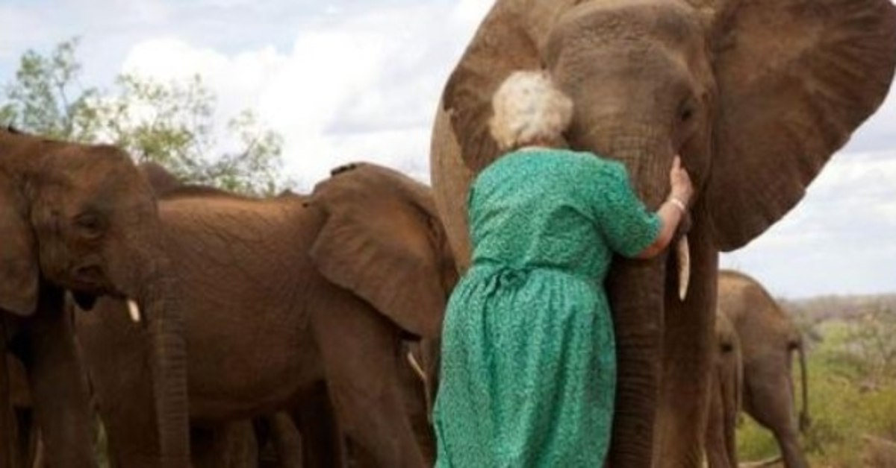

Orphaned baby elephants line up to hug woman who saved their lives

It is a sad fact that more and more elephants are being caught in Africa every year, wriets dogheirs
This makes the stories of rescued elephants even more significant.
Several dozen of them are housed in Sheldrick U, an elephant orphanage, located in Nairobi, Kenya.
People involved in nature conservation take care of elephants and raise them because they know that some of their family members have already been caught.
Daphne Sheldrick had been actively helping orphans for more than 40 years.
She is actually the first person to study to the end and thus perfect the formula that changes breast milk in elephants. In this way she feeded small elephants who have no parents.
Daphne is responsible for the lives of many elephants, but also other animals. It gave them a chance for a fresh start.
We can see how everyone lined up to give her one strong hug.
See the whole story in the video.
For years, she helped small, newborn elephants to develop and return to their natural environment, the wilderness.
She said that in addition to inspiring her to work through the Sheldrick Wildlife Trust, they also provided her with a lot of knowledge about life. With them, she realized a lot.
Elephants, she said, showed her when and how to leave the past and continue living in the future.
They strengthened her as a person through the time she spent trying to understand their torments and reactions to those bad moments.
Daphne Sheldrick has done a lot of good things in her life. An amazing woman!
Source: dogheirs.info


 Elephants, she said, showed her when and how to leave the past and continue living in the future.
They strengthened her as a person through the time she spent trying to understand their torments and reactions to those bad moments.
Elephants, she said, showed her when and how to leave the past and continue living in the future.
They strengthened her as a person through the time she spent trying to understand their torments and reactions to those bad moments.
 Daphne Sheldrick has done a lot of good things in her life. An amazing woman!
Source: dogheirs.info
Daphne Sheldrick has done a lot of good things in her life. An amazing woman!
Source: dogheirs.info